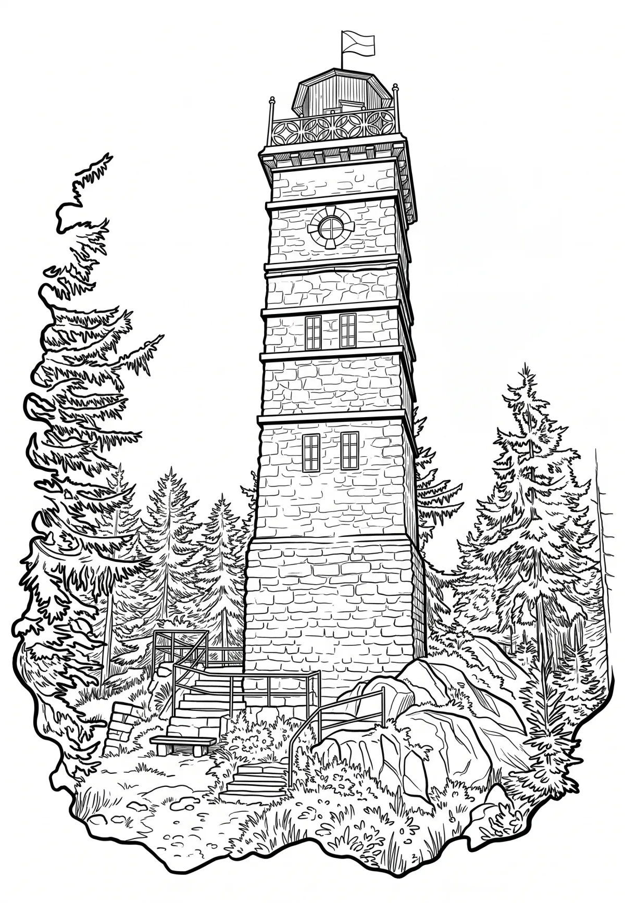

Rozhledna Pajndl
Tisovský vrch-Pajndl (německy Peindlberg) se tyčí do výšky 977 m n. m. severně od Nejdku nad vesnicí Tisová.
Více na Wikipedii
Tisovský vrch-Pajndl (německy Peindlberg) se tyčí do výšky 977 m n. m. severně od Nejdku nad vesnicí Tisová.
Více na Wikipedii